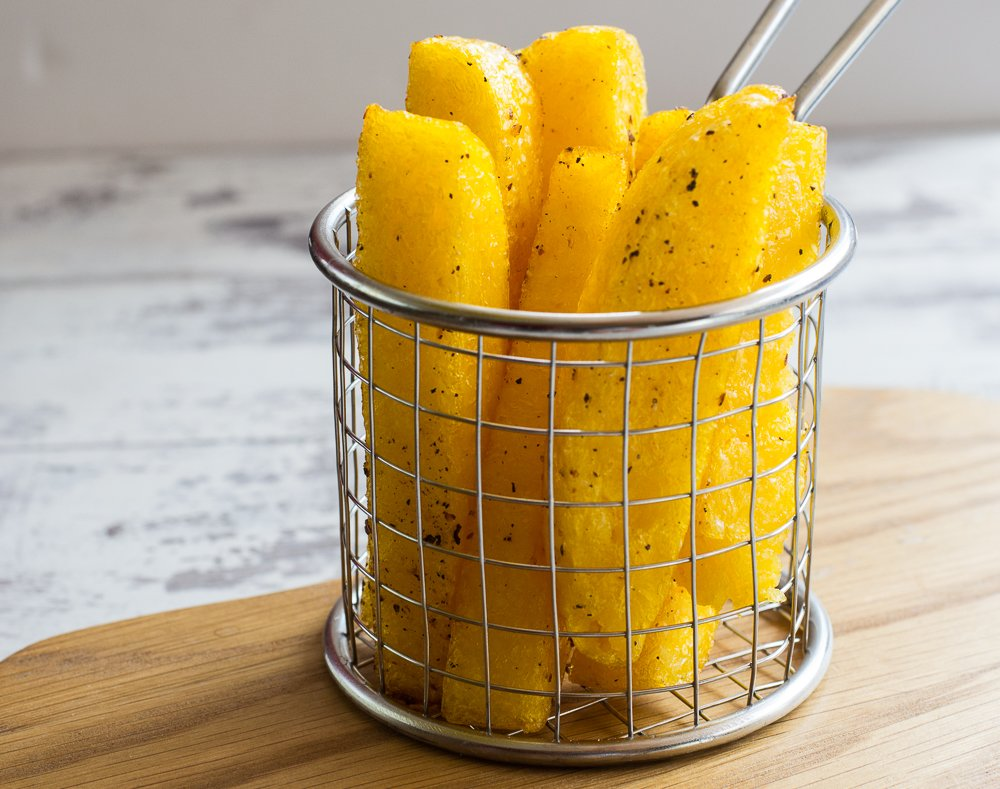
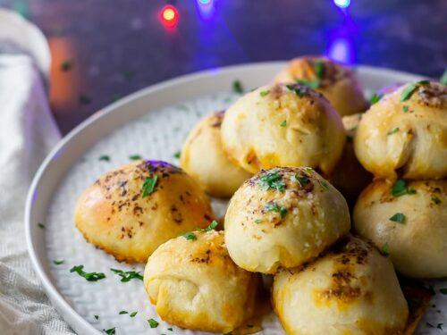
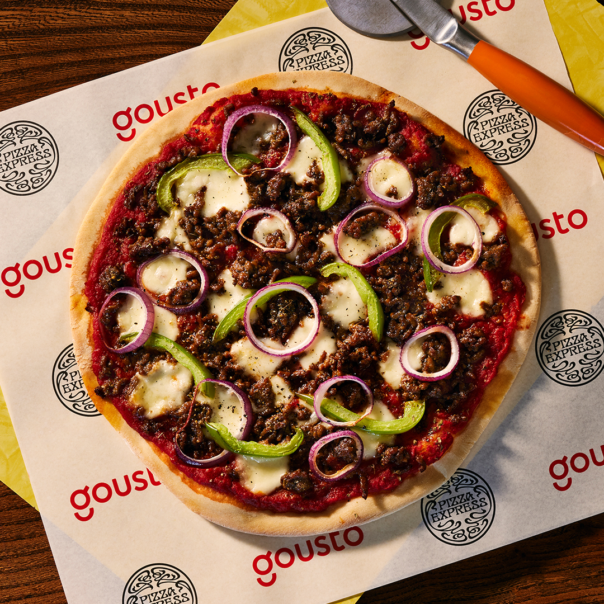
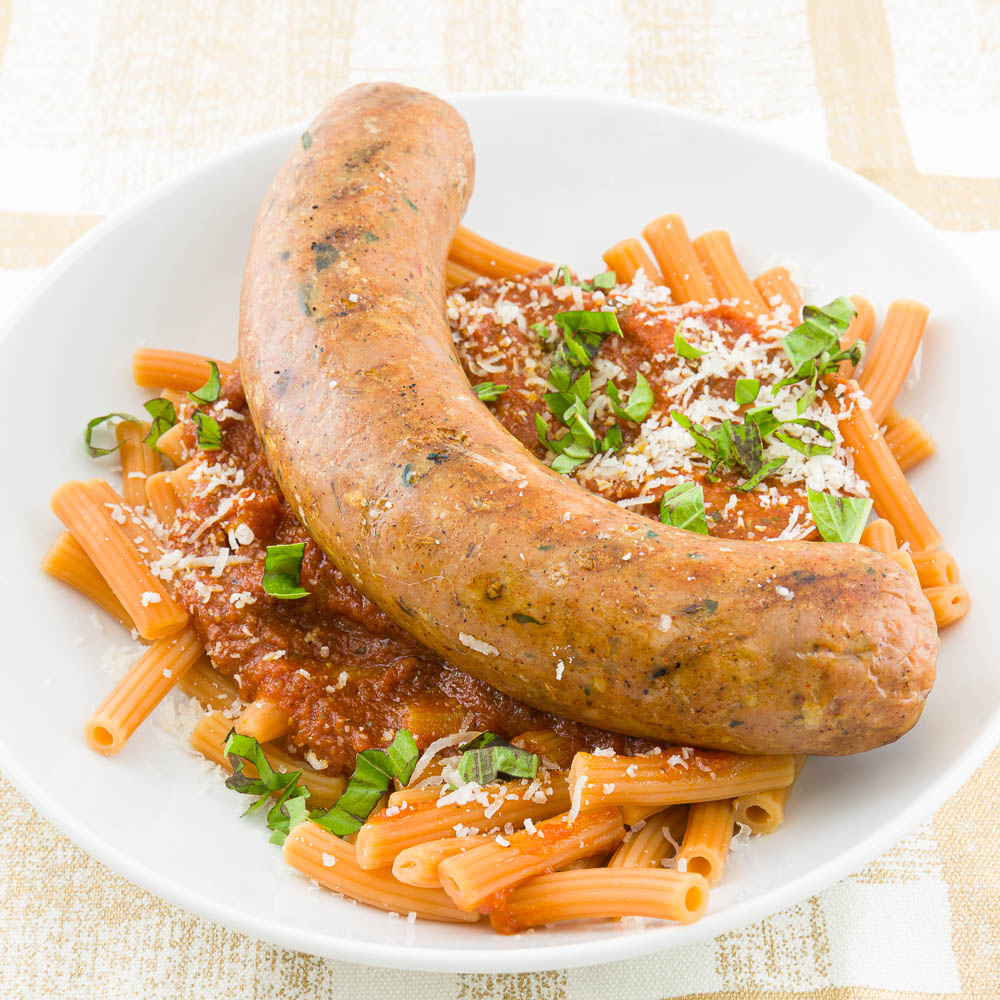

At Mario's, we offer a wige range of authentic Italian dishes aswell as drinks.
From our famous Spicy Giuseppe, tradtional Italian Sausage, and our amazing selection of wines from the Mezzogiorno.
Starters

Our Signature Cheesy Mozzarella Garlic Bread is a decadent, savory delight featuring a crispy exterior,
Soft interior, generously topped with melted mozzarella and infused with a rich garlic butter flavor.
Mario's famous Polenta Fries are crispy, rosemary
Smothered and potatoee goodness that put others to shame.
Our Loaded Pesto Dough Balls are tossed in delicious green basil &
Pine kernel pesto, with an Italian tomato dip and stringy cheese
Mains
Mario's Great Grandmother, Maria Luisa Mario's "Spicy Giuseppe", contains:
Tender, spiced ground beef, fresh chillies, red onion, green pepper, tomato and mozzarella, with chilli oil and parsley.

Lasange: A hearty blend of tender pasta layers, rich tomato sauce, seasoned ground meat,
Creamy béchamel, and melted cheese, baked to perfection for a classic, comforting Italian favorite.
Mario's Famous Italian Sausage: Juicy, flavor-packed sausage seasoned with a blend of fennel, garlic,
And herbs, offering a perfect balance of spice and savory, grilled to perfection.
Deserts

Tiramisu: A luxurious Italian dessert featuring layers of espresso-soaked ladyfingers,
mascarpone cheese blend, dusted with cocoa powder, offering a rich, creamy texture with a hint of coffee.

Vanilla Ice Cream: Simpley a bowl of Madagascar Vanilla Ice Cream